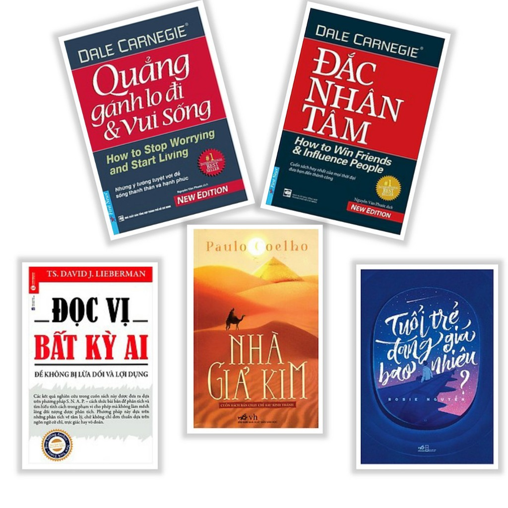

SÁCH ONLINE

"Việc đọc rất quan trọng. Nếu bạn biết cách đọc, cả thế giới sẽ mở ra cho bạn." - Barack Obama
At the moment that we persuade a child, any child, to cross that threshold, that magic threshold into a library, we change their lives forever, for the better.
-

NHÀ GIẢ KIM
Tiểu thuyết Nhà giả kim của Paulo Coelho như một câu chuyện cổ tích giản dị, nhân ái, giàu chất thơ, thấm đẫm những minh triết huyền bí của ...
-

HOÀNG TỬ BÉ
Hoàng tử bé là một cuốn sách xuất sắc trong việc truyền tải tri thức và những bài học nhân văn dành cho độc giả, khéo léo, sự đan xen giữa những suy nghĩ của ...
-

ĐỪNG BAO GIỜ BỎ CUỘC
Nội dung sách kể về cuộc đời Trump với bao nhiêu khó khăn, thử thách và rất nhiều thất bại ngay từ ban đầu, nhưng Ông vẫn không bỏ cuộc, sau mỗi lần vấp ngã lại ...
-

BƠ ĐI MÀ SỐNG
Bơ đi mà sống của nữ tác giả Mèo Xù là cuốn tản văn tràn đầy năng lượng sống khi truyền những cảm hứng chân thật nhất về cuộc đời, tình yêu, tình bạn, tình thân ...